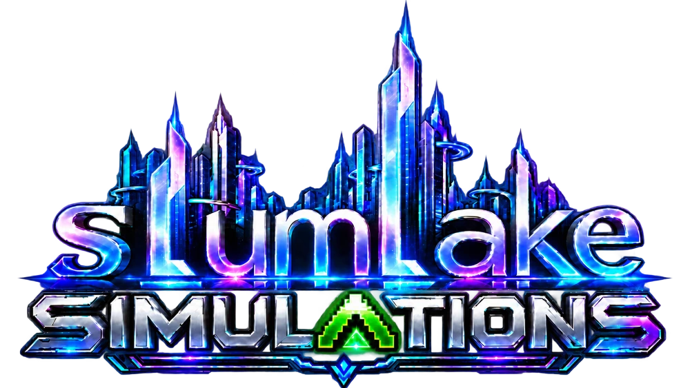

sLumLake simuLations is the name Ali Dinch publishes games under, from New South Wales, Australia.
ARMBAR: Arm Wrestling Career Simulator
Train, plan your year and climb from the backyard to the world stage. A free game for Android with no ads.
Privacy PolicyWhat the game stores and your choices Terms of Use and End User License AgreementThe agreement for playing ARMBAR Delete your accountHow to remove your account and cloud savesSupport
Questions, problems or reports: daviddinch@gmail.com
ARMBAR is a work of fiction. All pullers, events, venues and brands are fictitious; any resemblance to real persons or organizations is coincidental. Not affiliated with or endorsed by any arm wrestling federation, league, promotion or athlete.